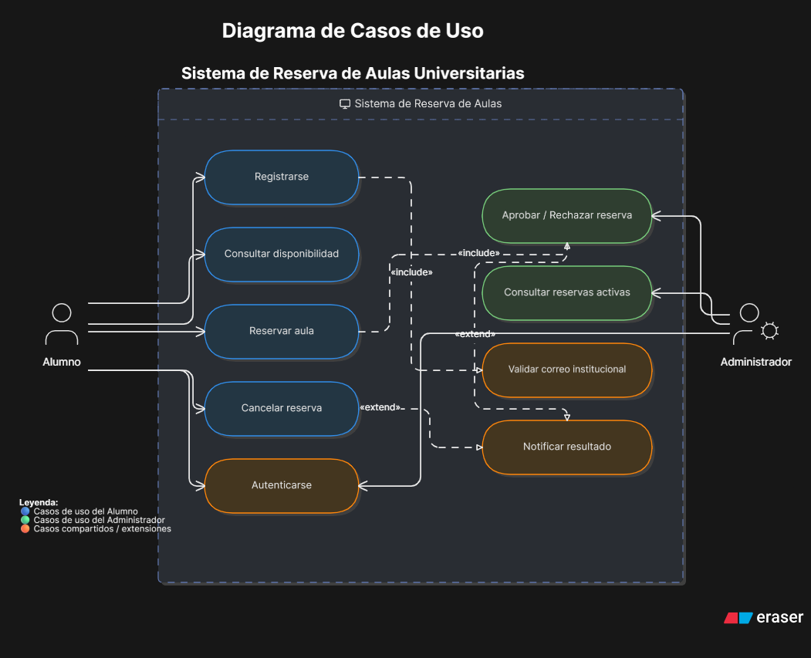
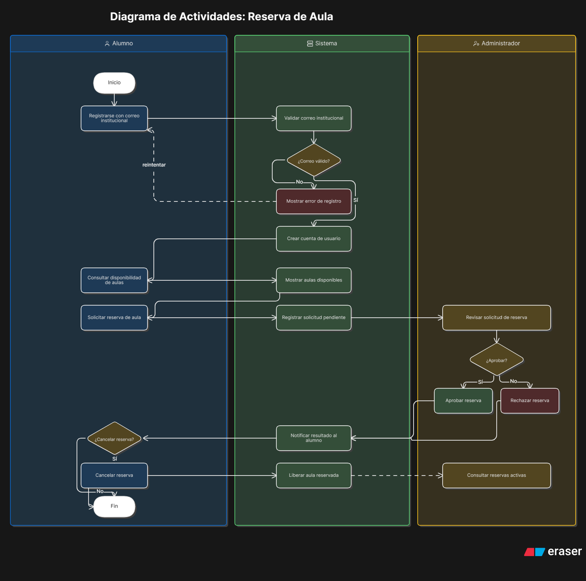
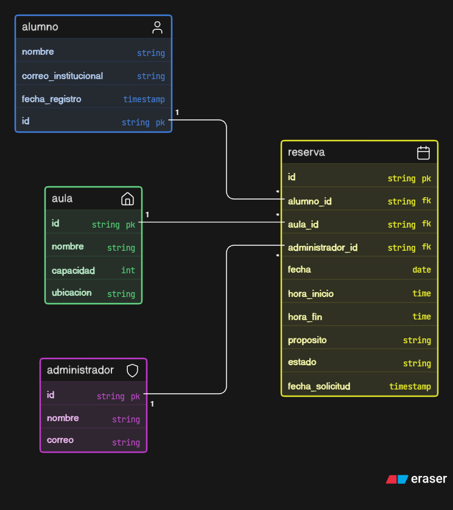

Parcial II de Análisis de Sistemas I
Owen Hengstenberg
Este sistema está diseñado de manera sencilla para la universidad, que permite a los alumnos reservar aulas de forma propia para realizar proyectos, reuniones o tutorías. El administrador se encarga de supervisar y gestionar el uso adecuado de los espacios.
Interacciones principales entre los alumnos, el administrador y el sistema.

Flujo del proceso al realizar la reserva de un aula.

Estructura de la base de datos con las entidades principales.
